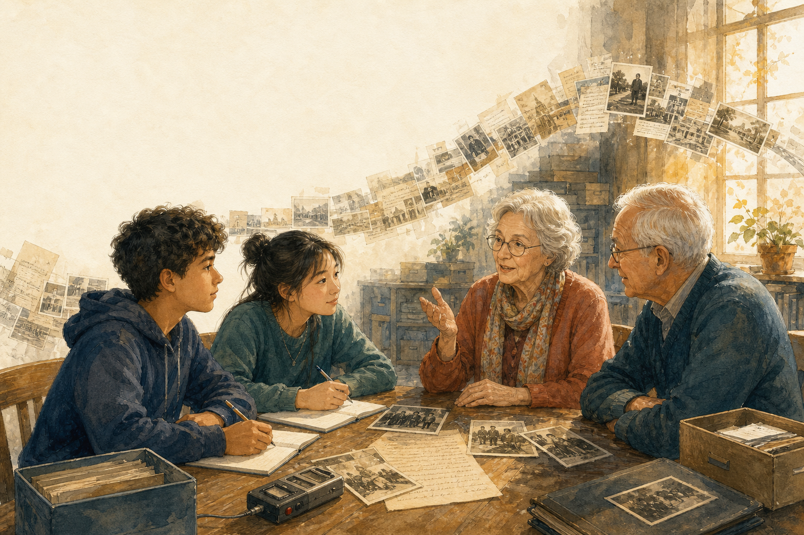

ERINNERN · ZUHÖREN · WEITERTRAGEN Geschichte bekommt eine Stimme Der Kurs erschließt Lebensgeschichten, prüft historischen Kontext und entwickelt daraus ein verantwortungsvoll gestaltetes Archiv.AKTUELL · SEPTEMBER 2026
Unsere Ergebnisse und die nächste Stunde
Hier findet ihr eure handschriftlichen Ergebnisse, die gemeinsame Zusammenfassung und das Material für die Recherchewerkstatt am 23. September.
DOWNLOADBEREICH
Materialien für den Kurs
Die QR-Codes auf den Vorderseiten führen immer direkt zu diesem Bereich.
Hinweis zu den Interviews: Die ausgewählten Ausschnitte stammen aus dem Zeitzeugen-Portal. Persönliche Erinnerungen werden respektvoll behandelt und mit historischem Kontext verbunden. Der Bericht von Anna Mettbach enthält belastende Schilderungen aus Auschwitz.